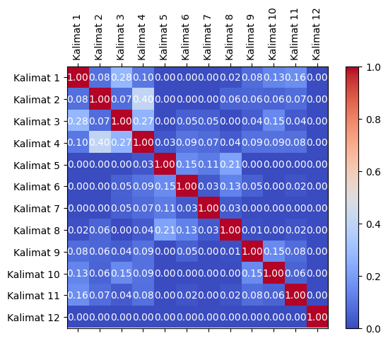
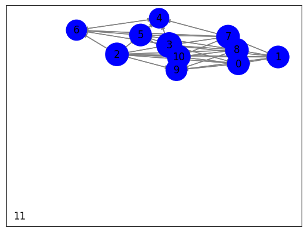
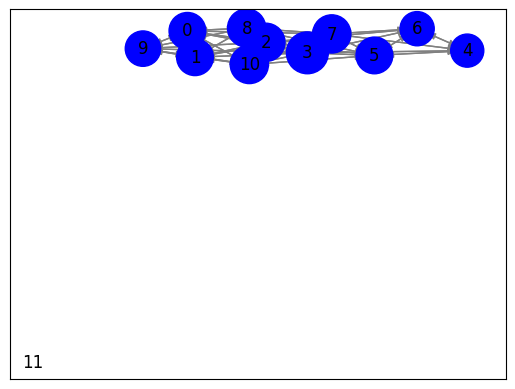
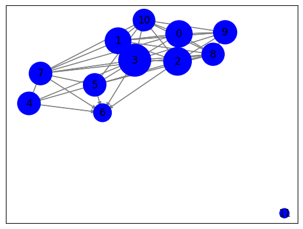

Berita_Online#
import requests
from bs4 import BeautifulSoup
import nltk
# Unduh konten halaman web berita
url = "https://news.detik.com/pemilu/d-7035258/maju-pilpres-2024-bareng-ganjar-mahfud-minta-doa-ke-gus-mus"
response = requests.get(url)
html = response.text
# Parsing halaman web menggunakan BeautifulSoup
soup = BeautifulSoup(html, 'html.parser')
# Ekstraksi teks dari elemen-elemen yang berisi berita
article = soup.find('div' ,class_="detail__body-text itp_bodycontent") # Sesuaikan dengan struktur HTML halaman web berita
article_text = article.get_text()
# Tokenisasi teks menjadi kalimat menggunakan nltk
nltk.download('punkt') # Pastikan Anda sudah mengunduh tokenisasi kalimat nltk
sentences = nltk.sent_tokenize(article_text)
# Cetak kalimat-kalimat
for sentence in sentences:
print(sentence)
[nltk_data] Downloading package punkt to /root/nltk_data...
[nltk_data] Unzipping tokenizers/punkt.zip.
Jakarta - Cawapres Ganjar Pranowo, Mahfud Md berkunjung ke kediaman Gus Mus, di Kelurahan Leteh, Rembang, Jawa Tengah (Jateng).
Mahfud mengaku memberi informasi bahwa dirinya ikut kontestasi politik kepada Gus Mus.
"Saya kan sering ke sini (Leteh, Rembang), sowan Gus Mus.
Ya saya memberi informasi saja bahwa saya ikut kontestasi politik," kata Mahfud usai sowan dilansir detikJateng, Selasa (14/11/2023).Baca juga: Mahfud Sowan ke Gus Mus: Semua Menjadi Ringan dan SegarMahfud juga sempat memohon doa kepada Gus Mus.
Tetapi doa itu tidak dimaksudkan untuk meminta dukungan, melainkan untuk kebaikan Bangsa Indonesia.
ADVERTISEMENT
SCROLL TO CONTINUE WITH CONTENT
"Saya minta doa yang terbaik bagi bangsa dan negara Indonesia.
Saya tadi berdoa, ya berdoa bersama-sama, tetapi tidak ada urusan dukung-mendukung atau apa.
Yang didukung adalah kebaikan Indonesia sehingga doanya untuk Indonesia agar lebih baik, itu yang diminta kepada Allah tadi," ungkap Mahfud.Pertemuan dilakukan secara tertutup terpantau berlangsung selama satu jam lebih.
Mahfud dan rombongan tiba pukul 18.32 WIB dan berpamitan pulang pukul 19.39 WIB.Dari luar kediaman Gus Mus, keduanya terdengar berbincang asyik.
Sesekali terdengar tawa lepas dari dalam ruang tamu kediaman Gus Mus.Baca selengkapnya di sini.
(dek/dek)
mahfud mahfud md gus mus pilpres 2024
Pantau Pemilu
Cek rekam jejak, visi misi, profil, hingga berita terkini pasangan Capres dan Cawapres favoritmu di Pemilu 2024 sekarang!
Lihat
from sklearn.feature_extraction.text import TfidfVectorizer
# Inisialisasi penghitung TF-IDF
tfidf_vectorizer = TfidfVectorizer()
# Hitung TF-IDF
tfidf_matrix = tfidf_vectorizer.fit_transform(sentences)
# Daftar kata kunci
feature_names = tfidf_vectorizer.get_feature_names_out()
# Konversi matriks TF-IDF menjadi bentuk yang lebih mudah dibaca
tfidf_values = tfidf_matrix.toarray()
# Cetak TF-IDF untuk setiap kata dalam setiap kalimat
for i, sentence in enumerate(sentences):
print(f"Kalimat {i + 1}: {sentence}")
for j, word in enumerate(feature_names):
tfidf_value = tfidf_values[i][j]
if tfidf_value > 0:
print(f"{word}: {tfidf_value:.4f}")
print()
Kalimat 1:
Jakarta - Cawapres Ganjar Pranowo, Mahfud Md berkunjung ke kediaman Gus Mus, di Kelurahan Leteh, Rembang, Jawa Tengah (Jateng).
berkunjung: 0.2719
cawapres: 0.2335
di: 0.2062
ganjar: 0.2719
gus: 0.1406
jakarta: 0.2719
jateng: 0.2719
jawa: 0.2719
ke: 0.2062
kediaman: 0.2062
kelurahan: 0.2719
leteh: 0.2335
mahfud: 0.1533
md: 0.2335
mus: 0.1406
pranowo: 0.2719
rembang: 0.2335
tengah: 0.2719
Kalimat 2: Mahfud mengaku memberi informasi bahwa dirinya ikut kontestasi politik kepada Gus Mus.
bahwa: 0.3064
dirinya: 0.3568
gus: 0.1846
ikut: 0.3064
informasi: 0.3064
kepada: 0.2707
kontestasi: 0.3064
mahfud: 0.2012
memberi: 0.3064
mengaku: 0.3568
mus: 0.1846
politik: 0.3064
Kalimat 3: "Saya kan sering ke sini (Leteh, Rembang), sowan Gus Mus.
gus: 0.2025
kan: 0.3915
ke: 0.2970
leteh: 0.3362
mus: 0.2025
rembang: 0.3362
saya: 0.2666
sering: 0.3915
sini: 0.3362
sowan: 0.3362
Kalimat 4: Ya saya memberi informasi saja bahwa saya ikut kontestasi politik," kata Mahfud usai sowan dilansir detikJateng, Selasa (14/11/2023).Baca juga: Mahfud Sowan ke Gus Mus: Semua Menjadi Ringan dan SegarMahfud juga sempat memohon doa kepada Gus Mus.
11: 0.1683
14: 0.1683
2023: 0.1683
baca: 0.1445
bahwa: 0.1445
dan: 0.1146
detikjateng: 0.1683
dilansir: 0.1683
doa: 0.1277
gus: 0.1741
ikut: 0.1445
informasi: 0.1445
juga: 0.3366
kata: 0.1683
ke: 0.1277
kepada: 0.1277
kontestasi: 0.1445
mahfud: 0.1898
memberi: 0.1445
memohon: 0.1683
menjadi: 0.1683
mus: 0.1741
politik: 0.1445
ringan: 0.1683
saja: 0.1683
saya: 0.2292
segarmahfud: 0.1683
selasa: 0.1683
sempat: 0.1683
semua: 0.1683
sowan: 0.2891
usai: 0.1683
ya: 0.1445
Kalimat 5: Tetapi doa itu tidak dimaksudkan untuk meminta dukungan, melainkan untuk kebaikan Bangsa Indonesia.
bangsa: 0.2501
dimaksudkan: 0.2912
doa: 0.2210
dukungan: 0.2912
indonesia: 0.2210
itu: 0.2501
kebaikan: 0.2501
melainkan: 0.2912
meminta: 0.2912
tetapi: 0.2501
tidak: 0.2501
untuk: 0.5003
Kalimat 6: ADVERTISEMENT
SCROLL TO CONTINUE WITH CONTENT
"Saya minta doa yang terbaik bagi bangsa dan negara Indonesia.
advertisement: 0.2716
bagi: 0.2716
bangsa: 0.2333
content: 0.2716
continue: 0.2716
dan: 0.1850
doa: 0.2061
indonesia: 0.2061
minta: 0.2716
negara: 0.2716
saya: 0.1850
scroll: 0.2716
terbaik: 0.2716
to: 0.2716
with: 0.2716
yang: 0.2333
Kalimat 7: Saya tadi berdoa, ya berdoa bersama-sama, tetapi tidak ada urusan dukung-mendukung atau apa.
ada: 0.2547
apa: 0.2547
atau: 0.2547
berdoa: 0.5094
bersama: 0.2547
dukung: 0.2547
mendukung: 0.2547
sama: 0.2547
saya: 0.1734
tadi: 0.2187
tetapi: 0.2187
tidak: 0.2187
urusan: 0.2547
ya: 0.2187
Kalimat 8: Yang didukung adalah kebaikan Indonesia sehingga doanya untuk Indonesia agar lebih baik, itu yang diminta kepada Allah tadi," ungkap Mahfud.Pertemuan dilakukan secara tertutup terpantau berlangsung selama satu jam lebih.
adalah: 0.1793
agar: 0.1793
allah: 0.1793
baik: 0.1793
berlangsung: 0.1793
didukung: 0.1793
dilakukan: 0.1793
diminta: 0.1793
doanya: 0.1793
indonesia: 0.2721
itu: 0.1540
jam: 0.1793
kebaikan: 0.1540
kepada: 0.1360
lebih: 0.3587
mahfud: 0.1011
pertemuan: 0.1793
satu: 0.1793
secara: 0.1793
sehingga: 0.1793
selama: 0.1793
tadi: 0.1540
terpantau: 0.1793
tertutup: 0.1793
ungkap: 0.1793
untuk: 0.1540
yang: 0.3080
Kalimat 9: Mahfud dan rombongan tiba pukul 18.32 WIB dan berpamitan pulang pukul 19.39 WIB.Dari luar kediaman Gus Mus, keduanya terdengar berbincang asyik.
18: 0.2010
19: 0.2010
32: 0.2010
39: 0.2010
asyik: 0.2010
berbincang: 0.2010
berpamitan: 0.2010
dan: 0.2737
dari: 0.1726
gus: 0.1040
kediaman: 0.1525
keduanya: 0.2010
luar: 0.2010
mahfud: 0.1133
mus: 0.1040
pukul: 0.4019
pulang: 0.2010
rombongan: 0.2010
terdengar: 0.1726
tiba: 0.2010
wib: 0.4019
Kalimat 10: Sesekali terdengar tawa lepas dari dalam ruang tamu kediaman Gus Mus.Baca selengkapnya di sini.
baca: 0.2518
dalam: 0.2932
dari: 0.2518
di: 0.2224
gus: 0.1516
kediaman: 0.2224
lepas: 0.2932
mus: 0.1516
ruang: 0.2932
selengkapnya: 0.2932
sesekali: 0.2932
sini: 0.2518
tamu: 0.2932
tawa: 0.2932
terdengar: 0.2518
Kalimat 11: (dek/dek)
mahfud mahfud md gus mus pilpres 2024
Pantau Pemilu
Cek rekam jejak, visi misi, profil, hingga berita terkini pasangan Capres dan Cawapres favoritmu di Pemilu 2024 sekarang!
2024: 0.3574
berita: 0.1787
capres: 0.1787
cawapres: 0.1535
cek: 0.1787
dan: 0.1217
dek: 0.3574
di: 0.1356
favoritmu: 0.1787
gus: 0.0924
hingga: 0.1787
jejak: 0.1787
mahfud: 0.2015
md: 0.1535
misi: 0.1787
mus: 0.0924
pantau: 0.1787
pasangan: 0.1787
pemilu: 0.3574
pilpres: 0.1787
profil: 0.1787
rekam: 0.1787
sekarang: 0.1787
terkini: 0.1787
visi: 0.1787
Kalimat 12: Lihat
lihat: 1.0000
from sklearn.metrics.pairwise import cosine_similarity
from sklearn.feature_extraction.text import TfidfVectorizer
# Indeks kalimat yang akan dibandingkan
sentence1_index = 0 # Ganti dengan indeks kalimat pertama yang ingin Anda bandingkan
sentence2_index = 1 # Ganti dengan indeks kalimat kedua yang ingin Anda bandingkan
# Ambil vektor TF-IDF untuk kedua kalimat
tfidf_vector1 = tfidf_matrix[sentence1_index]
tfidf_vector2 = tfidf_matrix[sentence2_index]
# Hitung cosine similarity antara kedua vektor
similarity = cosine_similarity(tfidf_vector1, tfidf_vector2)
# Cetak hasil cosine similarity
print(f"Cosine Similarity antara Kalimat {sentence1_index + 1} dan Kalimat {sentence2_index + 1}: {similarity[0][0]:.4f}")
Cosine Similarity antara Kalimat 1 dan Kalimat 2: 0.0827
# Matriks TF-IDF telah dihitung sebelumnya (tfidf_matrix)
# Hitung cosine similarity antara semua pasangan kalimat
similarity_matrix = cosine_similarity(tfidf_matrix, tfidf_matrix)
# Cetak hasil similarity_matrix
num_sentences = len(sentences) # Jumlah kalimat
for i in range(num_sentences):
for j in range(i+1, num_sentences):
similarity = similarity_matrix[i][j]
print(f"Cosine Similarity antara Kalimat {i + 1} dan Kalimat {j + 1}: {similarity:.4f}")
Cosine Similarity antara Kalimat 1 dan Kalimat 2: 0.0827
Cosine Similarity antara Kalimat 1 dan Kalimat 3: 0.2752
Cosine Similarity antara Kalimat 1 dan Kalimat 4: 0.1044
Cosine Similarity antara Kalimat 1 dan Kalimat 5: 0.0000
Cosine Similarity antara Kalimat 1 dan Kalimat 6: 0.0000
Cosine Similarity antara Kalimat 1 dan Kalimat 7: 0.0000
Cosine Similarity antara Kalimat 1 dan Kalimat 8: 0.0155
Cosine Similarity antara Kalimat 1 dan Kalimat 9: 0.0781
Cosine Similarity antara Kalimat 1 dan Kalimat 10: 0.1344
Cosine Similarity antara Kalimat 1 dan Kalimat 11: 0.1565
Cosine Similarity antara Kalimat 1 dan Kalimat 12: 0.0000
Cosine Similarity antara Kalimat 2 dan Kalimat 3: 0.0748
Cosine Similarity antara Kalimat 2 dan Kalimat 4: 0.4028
Cosine Similarity antara Kalimat 2 dan Kalimat 5: 0.0000
Cosine Similarity antara Kalimat 2 dan Kalimat 6: 0.0000
Cosine Similarity antara Kalimat 2 dan Kalimat 7: 0.0000
Cosine Similarity antara Kalimat 2 dan Kalimat 8: 0.0572
Cosine Similarity antara Kalimat 2 dan Kalimat 9: 0.0612
Cosine Similarity antara Kalimat 2 dan Kalimat 10: 0.0560
Cosine Similarity antara Kalimat 2 dan Kalimat 11: 0.0747
Cosine Similarity antara Kalimat 2 dan Kalimat 12: 0.0000
Cosine Similarity antara Kalimat 3 dan Kalimat 4: 0.2667
Cosine Similarity antara Kalimat 3 dan Kalimat 5: 0.0000
Cosine Similarity antara Kalimat 3 dan Kalimat 6: 0.0493
Cosine Similarity antara Kalimat 3 dan Kalimat 7: 0.0462
Cosine Similarity antara Kalimat 3 dan Kalimat 8: 0.0000
Cosine Similarity antara Kalimat 3 dan Kalimat 9: 0.0421
Cosine Similarity antara Kalimat 3 dan Kalimat 10: 0.1461
Cosine Similarity antara Kalimat 3 dan Kalimat 11: 0.0374
Cosine Similarity antara Kalimat 3 dan Kalimat 12: 0.0000
Cosine Similarity antara Kalimat 4 dan Kalimat 5: 0.0282
Cosine Similarity antara Kalimat 4 dan Kalimat 6: 0.0899
Cosine Similarity antara Kalimat 4 dan Kalimat 7: 0.0714
Cosine Similarity antara Kalimat 4 dan Kalimat 8: 0.0366
Cosine Similarity antara Kalimat 4 dan Kalimat 9: 0.0891
Cosine Similarity antara Kalimat 4 dan Kalimat 10: 0.0892
Cosine Similarity antara Kalimat 4 dan Kalimat 11: 0.0844
Cosine Similarity antara Kalimat 4 dan Kalimat 12: 0.0000
Cosine Similarity antara Kalimat 5 dan Kalimat 6: 0.1494
Cosine Similarity antara Kalimat 5 dan Kalimat 7: 0.1094
Cosine Similarity antara Kalimat 5 dan Kalimat 8: 0.2142
Cosine Similarity antara Kalimat 5 dan Kalimat 9: 0.0000
Cosine Similarity antara Kalimat 5 dan Kalimat 10: 0.0000
Cosine Similarity antara Kalimat 5 dan Kalimat 11: 0.0000
Cosine Similarity antara Kalimat 5 dan Kalimat 12: 0.0000
Cosine Similarity antara Kalimat 6 dan Kalimat 7: 0.0321
Cosine Similarity antara Kalimat 6 dan Kalimat 8: 0.1279
Cosine Similarity antara Kalimat 6 dan Kalimat 9: 0.0506
Cosine Similarity antara Kalimat 6 dan Kalimat 10: 0.0000
Cosine Similarity antara Kalimat 6 dan Kalimat 11: 0.0225
Cosine Similarity antara Kalimat 6 dan Kalimat 12: 0.0000
Cosine Similarity antara Kalimat 7 dan Kalimat 8: 0.0337
Cosine Similarity antara Kalimat 7 dan Kalimat 9: 0.0000
Cosine Similarity antara Kalimat 7 dan Kalimat 10: 0.0000
Cosine Similarity antara Kalimat 7 dan Kalimat 11: 0.0000
Cosine Similarity antara Kalimat 7 dan Kalimat 12: 0.0000
Cosine Similarity antara Kalimat 8 dan Kalimat 9: 0.0115
Cosine Similarity antara Kalimat 8 dan Kalimat 10: 0.0000
Cosine Similarity antara Kalimat 8 dan Kalimat 11: 0.0204
Cosine Similarity antara Kalimat 8 dan Kalimat 12: 0.0000
Cosine Similarity antara Kalimat 9 dan Kalimat 10: 0.1523
Cosine Similarity antara Kalimat 9 dan Kalimat 11: 0.0753
Cosine Similarity antara Kalimat 9 dan Kalimat 12: 0.0000
Cosine Similarity antara Kalimat 10 dan Kalimat 11: 0.0582
Cosine Similarity antara Kalimat 10 dan Kalimat 12: 0.0000
Cosine Similarity antara Kalimat 11 dan Kalimat 12: 0.0000
import pandas as pd
# Matriks TF-IDF telah dihitung sebelumnya (tfidf_matrix)
# Hitung cosine similarity antara semua pasangan kalimat
similarity_matrix = cosine_similarity(tfidf_matrix, tfidf_matrix)
# Nama kolom dan indeks untuk DataFrame
sentence_indices = [f"Kalimat {i + 1}" for i in range(len(sentences))]
# Buat DataFrame dari hasil cosine similarity
df = pd.DataFrame(similarity_matrix, columns=sentence_indices, index=sentence_indices)
# Cetak DataFrame
df
| Kalimat 1 | Kalimat 2 | Kalimat 3 | Kalimat 4 | Kalimat 5 | Kalimat 6 | Kalimat 7 | Kalimat 8 | Kalimat 9 | Kalimat 10 | Kalimat 11 | Kalimat 12 | |
|---|---|---|---|---|---|---|---|---|---|---|---|---|
| Kalimat 1 | 1.000000 | 0.082747 | 0.275214 | 0.104385 | 0.000000 | 0.000000 | 0.000000 | 0.015496 | 0.078051 | 0.134386 | 0.156492 | 0.0 |
| Kalimat 2 | 0.082747 | 1.000000 | 0.074757 | 0.402756 | 0.000000 | 0.000000 | 0.000000 | 0.057166 | 0.061170 | 0.055978 | 0.074650 | 0.0 |
| Kalimat 3 | 0.275214 | 0.074757 | 1.000000 | 0.266723 | 0.000000 | 0.049307 | 0.046236 | 0.000000 | 0.042105 | 0.146063 | 0.037435 | 0.0 |
| Kalimat 4 | 0.104385 | 0.402756 | 0.266723 | 1.000000 | 0.028209 | 0.089897 | 0.071367 | 0.036554 | 0.089065 | 0.089190 | 0.084359 | 0.0 |
| Kalimat 5 | 0.000000 | 0.000000 | 0.000000 | 0.028209 | 1.000000 | 0.149409 | 0.109428 | 0.214205 | 0.000000 | 0.000000 | 0.000000 | 0.0 |
| Kalimat 6 | 0.000000 | 0.000000 | 0.049307 | 0.089897 | 0.149409 | 1.000000 | 0.032080 | 0.127922 | 0.050624 | 0.000000 | 0.022504 | 0.0 |
| Kalimat 7 | 0.000000 | 0.000000 | 0.046236 | 0.071367 | 0.109428 | 0.032080 | 1.000000 | 0.033689 | 0.000000 | 0.000000 | 0.000000 | 0.0 |
| Kalimat 8 | 0.015496 | 0.057166 | 0.000000 | 0.036554 | 0.214205 | 0.127922 | 0.033689 | 1.000000 | 0.011455 | 0.000000 | 0.020369 | 0.0 |
| Kalimat 9 | 0.078051 | 0.061170 | 0.042105 | 0.089065 | 0.000000 | 0.050624 | 0.000000 | 0.011455 | 1.000000 | 0.152343 | 0.075346 | 0.0 |
| Kalimat 10 | 0.134386 | 0.055978 | 0.146063 | 0.089190 | 0.000000 | 0.000000 | 0.000000 | 0.000000 | 0.152343 | 1.000000 | 0.058178 | 0.0 |
| Kalimat 11 | 0.156492 | 0.074650 | 0.037435 | 0.084359 | 0.000000 | 0.022504 | 0.000000 | 0.020369 | 0.075346 | 0.058178 | 1.000000 | 0.0 |
| Kalimat 12 | 0.000000 | 0.000000 | 0.000000 | 0.000000 | 0.000000 | 0.000000 | 0.000000 | 0.000000 | 0.000000 | 0.000000 | 0.000000 | 1.0 |
import pandas as pd
import numpy as np
import matplotlib.pyplot as plt
# Matriks TF-IDF telah dihitung sebelumnya (tfidf_matrix)
# Hitung cosine similarity antara semua pasangan kalimat
similarity_matrix = cosine_similarity(tfidf_matrix, tfidf_matrix)
# Nama kolom dan indeks untuk DataFrame
sentence_indices = [f"Kalimat {i + 1}" for i in range(len(sentences))]
# Buat DataFrame dari hasil cosine similarity
df = pd.DataFrame(similarity_matrix, columns=sentence_indices, index=sentence_indices)
# Membuat grafik matriks
fig, ax = plt.subplots()
cax = ax.matshow(df, cmap='coolwarm')
fig.colorbar(cax)
# Memberi label pada sumbu X dan Y
ax.set_xticks(np.arange(len(df.columns)))
ax.set_yticks(np.arange(len(df.index)))
ax.set_xticklabels(df.columns, rotation=90)
ax.set_yticklabels(df.index)
# Menampilkan nilai similarity pada matriks
for i in range(len(df.index)):
for j in range(len(df.columns)):
text = ax.text(j, i, f'{df.iat[i, j]:.2f}', ha='center', va='center', color='w')
plt.show()

import networkx as nx
# Buat grafik dari matriks similarity
G = nx.Graph()
# Tambahkan simpul (node) ke grafik yang mewakili setiap kalimat
for sentence in sentences:
G.add_node(sentence)
# Tambahkan tepi (edge) antara kalimat berdasarkan similarity
for i in range(len(sentences)):
for j in range(i + 1, len(sentences)):
similarity = df.iloc[i, j] # Mengambil similarity dari DataFrame
if similarity > 0:
G.add_edge(sentences[i], sentences[j], weight=similarity)
# Hitung closeness centrality untuk setiap simpul
closeness_centrality = nx.closeness_centrality(G, distance='weight')
# Cetak closeness centrality
for sentence, centrality in closeness_centrality.items():
print(f"Closeness Centrality of {sentence}: {centrality:.4f}")
Closeness Centrality of
Jakarta - Cawapres Ganjar Pranowo, Mahfud Md berkunjung ke kediaman Gus Mus, di Kelurahan Leteh, Rembang, Jawa Tengah (Jateng).: 16.4116
Closeness Centrality of Mahfud mengaku memberi informasi bahwa dirinya ikut kontestasi politik kepada Gus Mus.: 11.3630
Closeness Centrality of "Saya kan sering ke sini (Leteh, Rembang), sowan Gus Mus.: 13.4380
Closeness Centrality of Ya saya memberi informasi saja bahwa saya ikut kontestasi politik," kata Mahfud usai sowan dilansir detikJateng, Selasa (14/11/2023).Baca juga: Mahfud Sowan ke Gus Mus: Semua Menjadi Ringan dan SegarMahfud juga sempat memohon doa kepada Gus Mus.: 14.1067
Closeness Centrality of Tetapi doa itu tidak dimaksudkan untuk meminta dukungan, melainkan untuk kebaikan Bangsa Indonesia.: 10.1199
Closeness Centrality of ADVERTISEMENT
SCROLL TO CONTINUE WITH CONTENT
"Saya minta doa yang terbaik bagi bangsa dan negara Indonesia.: 14.6472
Closeness Centrality of Saya tadi berdoa, ya berdoa bersama-sama, tetapi tidak ada urusan dukung-mendukung atau apa.: 14.3803
Closeness Centrality of Yang didukung adalah kebaikan Indonesia sehingga doanya untuk Indonesia agar lebih baik, itu yang diminta kepada Allah tadi," ungkap Mahfud.Pertemuan dilakukan secara tertutup terpantau berlangsung selama satu jam lebih.: 21.9337
Closeness Centrality of Mahfud dan rombongan tiba pukul 18.32 WIB dan berpamitan pulang pukul 19.39 WIB.Dari luar kediaman Gus Mus, keduanya terdengar berbincang asyik.: 18.8023
Closeness Centrality of Sesekali terdengar tawa lepas dari dalam ruang tamu kediaman Gus Mus.Baca selengkapnya di sini.: 10.4269
Closeness Centrality of (dek/dek)
mahfud mahfud md gus mus pilpres 2024
Pantau Pemilu
Cek rekam jejak, visi misi, profil, hingga berita terkini pasangan Capres dan Cawapres favoritmu di Pemilu 2024 sekarang!: 19.0610
Closeness Centrality of Lihat: 0.0000
import networkx as nx
# Matriks TF-IDF telah dihitung sebelumnya (tfidf_matrix)
# Hitung cosine similarity antara semua pasangan kalimat
similarity_matrix = cosine_similarity(tfidf_matrix, tfidf_matrix)
# Buat grafik berarah (DiGraph) berdasarkan similarity_matrix
G = nx.DiGraph()
for i in range(len(similarity_matrix)):
G.add_node(i) # Tambahkan node dengan indeks numerik
for i in range(len(similarity_matrix)):
for j in range(len(similarity_matrix)):
similarity = similarity_matrix[i][j]
if similarity > 0 and i != j: # Pastikan node tidak menghubungkan dirinya sendiri
G.add_edge(i, j)
# Hitung closeness centrality
closeness_centrality = nx.closeness_centrality(G)
# Visualisasi closeness centrality
pos = nx.spring_layout(G) # Atur layout grafik
node_size = [v * 1000 for v in closeness_centrality.values()] # Ubah ukuran node berdasarkan closeness centrality, dengan faktor pengurangan ukuran
nx.draw_networkx_nodes(G, pos, node_size=node_size, node_color='b')
nx.draw_networkx_edges(G, pos, edge_color='gray', arrows=True)
nx.draw_networkx_labels(G, pos)
plt.show()
# Cetak closeness centrality
print("Closeness Centrality:")
for node, closeness in closeness_centrality.items():
print(f"Node {node}: {closeness:.4f}")

Closeness Centrality:
Node 0: 0.6993
Node 1: 0.6993
Node 2: 0.7576
Node 3: 0.9091
Node 4: 0.5682
Node 5: 0.6993
Node 6: 0.6061
Node 7: 0.7576
Node 8: 0.7576
Node 9: 0.6494
Node 10: 0.7576
Node 11: 0.0000
#membangun sebuah graf yang merepresentasikan hubungan antara kalimat dalam teks berdasarkan kemiripan (similarity) antara kalimat-kalimat tersebut.
import networkx as nx
# Buat grafik dari matriks similarity
G = nx.Graph()
# Tambahkan simpul (node) ke grafik yang mewakili setiap kalimat
for sentence in sentences:
G.add_node(sentence)
# Tambahkan tepi (edge) antara kalimat berdasarkan similarity
for i in range(len(sentences)):
for j in range(i + 1, len(sentences)):
similarity = df.iloc[i, j] # Mengambil similarity dari DataFrame
if similarity > 0:
G.add_edge(sentences[i], sentences[j], weight=similarity)
# Hitung closeness centrality untuk setiap simpul
closeness_centrality = nx.closeness_centrality(G, distance='weight')
# Cetak closeness centrality
for sentence, centrality in closeness_centrality.items():
print(f"Closeness Centrality of {sentence}: {centrality:.4f}")
Closeness Centrality of
Jakarta - Cawapres Ganjar Pranowo, Mahfud Md berkunjung ke kediaman Gus Mus, di Kelurahan Leteh, Rembang, Jawa Tengah (Jateng).: 16.4116
Closeness Centrality of Mahfud mengaku memberi informasi bahwa dirinya ikut kontestasi politik kepada Gus Mus.: 11.3630
Closeness Centrality of "Saya kan sering ke sini (Leteh, Rembang), sowan Gus Mus.: 13.4380
Closeness Centrality of Ya saya memberi informasi saja bahwa saya ikut kontestasi politik," kata Mahfud usai sowan dilansir detikJateng, Selasa (14/11/2023).Baca juga: Mahfud Sowan ke Gus Mus: Semua Menjadi Ringan dan SegarMahfud juga sempat memohon doa kepada Gus Mus.: 14.1067
Closeness Centrality of Tetapi doa itu tidak dimaksudkan untuk meminta dukungan, melainkan untuk kebaikan Bangsa Indonesia.: 10.1199
Closeness Centrality of ADVERTISEMENT
SCROLL TO CONTINUE WITH CONTENT
"Saya minta doa yang terbaik bagi bangsa dan negara Indonesia.: 14.6472
Closeness Centrality of Saya tadi berdoa, ya berdoa bersama-sama, tetapi tidak ada urusan dukung-mendukung atau apa.: 14.3803
Closeness Centrality of Yang didukung adalah kebaikan Indonesia sehingga doanya untuk Indonesia agar lebih baik, itu yang diminta kepada Allah tadi," ungkap Mahfud.Pertemuan dilakukan secara tertutup terpantau berlangsung selama satu jam lebih.: 21.9337
Closeness Centrality of Mahfud dan rombongan tiba pukul 18.32 WIB dan berpamitan pulang pukul 19.39 WIB.Dari luar kediaman Gus Mus, keduanya terdengar berbincang asyik.: 18.8023
Closeness Centrality of Sesekali terdengar tawa lepas dari dalam ruang tamu kediaman Gus Mus.Baca selengkapnya di sini.: 10.4269
Closeness Centrality of (dek/dek)
mahfud mahfud md gus mus pilpres 2024
Pantau Pemilu
Cek rekam jejak, visi misi, profil, hingga berita terkini pasangan Capres dan Cawapres favoritmu di Pemilu 2024 sekarang!: 19.0610
Closeness Centrality of Lihat: 0.0000
#membuat grafik berarah (Directed Graph - DiGraph) yang merepresentasikan hubungan antara kalimat-kalimat dalam teks berdasarkan kemiripan (cosine similarity)
import networkx as nx
import pandas as pd
# Matriks TF-IDF telah dihitung sebelumnya (tfidf_matrix)
# Hitung cosine similarity antara semua pasangan kalimat
similarity_matrix = cosine_similarity(tfidf_matrix, tfidf_matrix)
# Buat grafik berarah (DiGraph) berdasarkan similarity_matrix
G = nx.DiGraph()
for i in range(len(similarity_matrix)):
G.add_node(i) # Tambahkan node dengan indeks numerik
for i in range(len(similarity_matrix)):
for j in range(len(similarity_matrix)):
similarity = similarity_matrix[i][j]
if similarity > 0 and i != j: # Pastikan node tidak menghubungkan dirinya sendiri
G.add_edge(i, j)
# Hitung closeness centrality
closeness_centrality = nx.closeness_centrality(G)
# Visualisasi closeness centrality
pos = nx.spring_layout(G) # Atur layout grafik
node_size = [v * 1000 for v in closeness_centrality.values()] # Ubah ukuran node berdasarkan closeness centrality, dengan faktor pengurangan ukuran
nx.draw_networkx_nodes(G, pos, node_size=node_size, node_color='b')
nx.draw_networkx_edges(G, pos, edge_color='gray', arrows=True)
nx.draw_networkx_labels(G, pos)
plt.show()
# Cetak closeness centrality dari yang tertinggi hingga terendah
print("Closeness Centrality (Dari Tertinggi ke Terendah):")
sorted_closeness = sorted(closeness_centrality.items(), key=lambda x: x[1], reverse=True)
for node, closeness in sorted_closeness:
sentence = sentences[node] # Akses kalimat yang sesuai dengan node
print(f"Node {node}: Closeness Centrality {closeness:.4f}")
print(f"Kalimat: {sentence}")
print()

Closeness Centrality (Dari Tertinggi ke Terendah):
Node 3: Closeness Centrality 0.9091
Kalimat: Ya saya memberi informasi saja bahwa saya ikut kontestasi politik," kata Mahfud usai sowan dilansir detikJateng, Selasa (14/11/2023).Baca juga: Mahfud Sowan ke Gus Mus: Semua Menjadi Ringan dan SegarMahfud juga sempat memohon doa kepada Gus Mus.
Node 2: Closeness Centrality 0.7576
Kalimat: "Saya kan sering ke sini (Leteh, Rembang), sowan Gus Mus.
Node 7: Closeness Centrality 0.7576
Kalimat: Yang didukung adalah kebaikan Indonesia sehingga doanya untuk Indonesia agar lebih baik, itu yang diminta kepada Allah tadi," ungkap Mahfud.Pertemuan dilakukan secara tertutup terpantau berlangsung selama satu jam lebih.
Node 8: Closeness Centrality 0.7576
Kalimat: Mahfud dan rombongan tiba pukul 18.32 WIB dan berpamitan pulang pukul 19.39 WIB.Dari luar kediaman Gus Mus, keduanya terdengar berbincang asyik.
Node 10: Closeness Centrality 0.7576
Kalimat: (dek/dek)
mahfud mahfud md gus mus pilpres 2024
Pantau Pemilu
Cek rekam jejak, visi misi, profil, hingga berita terkini pasangan Capres dan Cawapres favoritmu di Pemilu 2024 sekarang!
Node 0: Closeness Centrality 0.6993
Kalimat:
Jakarta - Cawapres Ganjar Pranowo, Mahfud Md berkunjung ke kediaman Gus Mus, di Kelurahan Leteh, Rembang, Jawa Tengah (Jateng).
Node 1: Closeness Centrality 0.6993
Kalimat: Mahfud mengaku memberi informasi bahwa dirinya ikut kontestasi politik kepada Gus Mus.
Node 5: Closeness Centrality 0.6993
Kalimat: ADVERTISEMENT
SCROLL TO CONTINUE WITH CONTENT
"Saya minta doa yang terbaik bagi bangsa dan negara Indonesia.
Node 9: Closeness Centrality 0.6494
Kalimat: Sesekali terdengar tawa lepas dari dalam ruang tamu kediaman Gus Mus.Baca selengkapnya di sini.
Node 6: Closeness Centrality 0.6061
Kalimat: Saya tadi berdoa, ya berdoa bersama-sama, tetapi tidak ada urusan dukung-mendukung atau apa.
Node 4: Closeness Centrality 0.5682
Kalimat: Tetapi doa itu tidak dimaksudkan untuk meminta dukungan, melainkan untuk kebaikan Bangsa Indonesia.
Node 11: Closeness Centrality 0.0000
Kalimat: Lihat
import networkx as nx
import pandas as pd
import matplotlib.pyplot as plt
from sklearn.feature_extraction.text import TfidfVectorizer
from sklearn.metrics.pairwise import cosine_similarity
# Matriks TF-IDF telah dihitung sebelumnya (tfidf_matrix)
# Hitung cosine similarity antara semua pasangan kalimat
similarity_matrix = cosine_similarity(tfidf_matrix, tfidf_matrix)
# Buat grafik berarah (DiGraph) berdasarkan similarity_matrix
G = nx.DiGraph()
for i in range(len(similarity_matrix)):
G.add_node(i) # Tambahkan node dengan indeks numerik
for i in range(len(similarity_matrix)):
for j in range(len(similarity_matrix)):
similarity = similarity_matrix[i][j]
if similarity > 0 and i != j: # Pastikan node tidak menghubungkan dirinya sendiri
G.add_edge(i, j, weight=similarity) # Gunakan similarity sebagai weight
# Hitung PageRank centrality
pagerank_centrality = nx.pagerank(G, weight='weight')
# Visualisasi PageRank centrality
pos = nx.spring_layout(G) # Atur layout grafik
node_size = [v * 10000 for v in pagerank_centrality.values()] # Ubah ukuran node berdasarkan PageRank, dengan faktor pengurangan ukuran
nx.draw_networkx_nodes(G, pos, node_size=node_size, node_color='b')
nx.draw_networkx_edges(G, pos, edge_color='gray', arrows=True)
nx.draw_networkx_labels(G, pos)
plt.show()
# Cetak PageRank centrality dari yang tertinggi hingga terendah
print("PageRank Centrality (Dari Tertinggi ke Terendah):")
sorted_pagerank = sorted(pagerank_centrality.items(), key=lambda x: x[1], reverse=True)
for node, pagerank in sorted_pagerank:
sentence = sentences[node] # Akses kalimat yang sesuai dengan node
print(f"Node {node}: PageRank Centrality {pagerank:.4f}")
print(f"Kalimat: {sentence}")
print()

PageRank Centrality (Dari Tertinggi ke Terendah):
Node 3: PageRank Centrality 0.1546
Kalimat: Ya saya memberi informasi saja bahwa saya ikut kontestasi politik," kata Mahfud usai sowan dilansir detikJateng, Selasa (14/11/2023).Baca juga: Mahfud Sowan ke Gus Mus: Semua Menjadi Ringan dan SegarMahfud juga sempat memohon doa kepada Gus Mus.
Node 2: PageRank Centrality 0.1161
Kalimat: "Saya kan sering ke sini (Leteh, Rembang), sowan Gus Mus.
Node 0: PageRank Centrality 0.1056
Kalimat:
Jakarta - Cawapres Ganjar Pranowo, Mahfud Md berkunjung ke kediaman Gus Mus, di Kelurahan Leteh, Rembang, Jawa Tengah (Jateng).
Node 1: PageRank Centrality 0.1009
Kalimat: Mahfud mengaku memberi informasi bahwa dirinya ikut kontestasi politik kepada Gus Mus.
Node 9: PageRank Centrality 0.0823
Kalimat: Sesekali terdengar tawa lepas dari dalam ruang tamu kediaman Gus Mus.Baca selengkapnya di sini.
Node 4: PageRank Centrality 0.0779
Kalimat: Tetapi doa itu tidak dimaksudkan untuk meminta dukungan, melainkan untuk kebaikan Bangsa Indonesia.
Node 7: PageRank Centrality 0.0777
Kalimat: Yang didukung adalah kebaikan Indonesia sehingga doanya untuk Indonesia agar lebih baik, itu yang diminta kepada Allah tadi," ungkap Mahfud.Pertemuan dilakukan secara tertutup terpantau berlangsung selama satu jam lebih.
Node 5: PageRank Centrality 0.0769
Kalimat: ADVERTISEMENT
SCROLL TO CONTINUE WITH CONTENT
"Saya minta doa yang terbaik bagi bangsa dan negara Indonesia.
Node 8: PageRank Centrality 0.0751
Kalimat: Mahfud dan rombongan tiba pukul 18.32 WIB dan berpamitan pulang pukul 19.39 WIB.Dari luar kediaman Gus Mus, keduanya terdengar berbincang asyik.
Node 10: PageRank Centrality 0.0711
Kalimat: (dek/dek)
mahfud mahfud md gus mus pilpres 2024
Pantau Pemilu
Cek rekam jejak, visi misi, profil, hingga berita terkini pasangan Capres dan Cawapres favoritmu di Pemilu 2024 sekarang!
Node 6: PageRank Centrality 0.0485
Kalimat: Saya tadi berdoa, ya berdoa bersama-sama, tetapi tidak ada urusan dukung-mendukung atau apa.
Node 11: PageRank Centrality 0.0135
Kalimat: Lihat
import pandas as pd
# Hitung betweenness centrality
betweenness= nx.betweenness_centrality(G)
# Cetak DataFrame
print("DataFrame Betweenness Centrality:")
sorted_betweenness = dict(sorted(betweenness.items(), key=lambda item: item[1], reverse=True))
for node, between in sorted_betweenness.items():
print(f"Node {node}: {between:.4f}")
DataFrame Betweenness Centrality:
Node 3: 0.1029
Node 7: 0.0588
Node 2: 0.0421
Node 5: 0.0299
Node 8: 0.0181
Node 10: 0.0181
Node 6: 0.0087
Node 0: 0.0062
Node 1: 0.0062
Node 4: 0.0000
Node 9: 0.0000
Node 11: 0.0000
# Cetak betweenness
top_3_between = list(sorted_betweenness.items())[:3]
# Memasukkan 3 kalimat teratas dan informasi node ke dalam DataFrame
databw = {
"Node": [node for node, _ in top_3_between],
"Between": [between for _, between in top_3_between],
"Kalimat": [sentences[node] for node, _ in top_3_between]
}
df_top_3bw = pd.DataFrame(databw)
# Cetak DataFrame
print("Tiga Node Between Teratas")
df_top_3bw
Tiga Node Between Teratas
| Node | Between | Kalimat | |
|---|---|---|---|
| 0 | 3 | 0.102900 | Ya saya memberi informasi saja bahwa saya ikut... |
| 1 | 7 | 0.058788 | Yang didukung adalah kebaikan Indonesia sehing... |
| 2 | 2 | 0.042121 | "Saya kan sering ke sini (Leteh, Rembang), sow... |